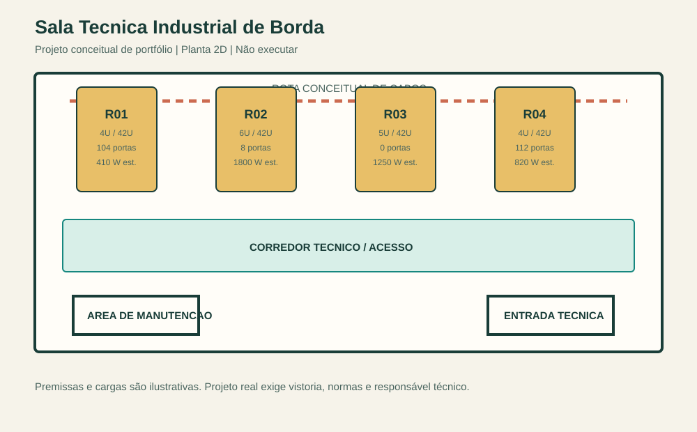

Sala Técnica Industrial de Borda
Documentação 2D, inventário técnico e automação leve para uma implantação conceitual em ambiente industrial.
Limite do material: não é projeto executivo, memorial de cálculo, especificação de fabricante ou orientação para obra. Os números e posicionamentos existem apenas para demonstrar método de organização e documentação.
4RACKS CONCEITUAIS
224PORTAS DE REFERÊNCIA
4280 WCARGA ILUSTRATIVA
Entregáveis
- Planta geral da sala em 2D.
- Posicionamento de racks e corredor técnico.
- Rota conceitual de cabeamento.
- Lista de equipamentos rastreável.
- Ocupação de rack, portas e carga.
- DXF editável e prévia vetorial.

Resumo de capacidade
| Rack | Ocupação | Livre | Portas | Carga estimada |
|---|---|---|---|---|
| R01 | 4U / 42U | 38U | 104 | 410 W |
| R02 | 6U / 42U | 36U | 8 | 1800 W |
| R03 | 5U / 42U | 37U | 0 | 1250 W |
| R04 | 4U / 42U | 38U | 112 | 820 W |
Método demonstrado
O inventário é mantido em CSV. Um script Python valida a ocupação de 42U por rack e gera automaticamente a lista de materiais, o resumo de capacidade, a planta DXF, a prévia SVG e esta página. Assim, alteração de dados pode ser refletida nos entregáveis sem recálculo manual.